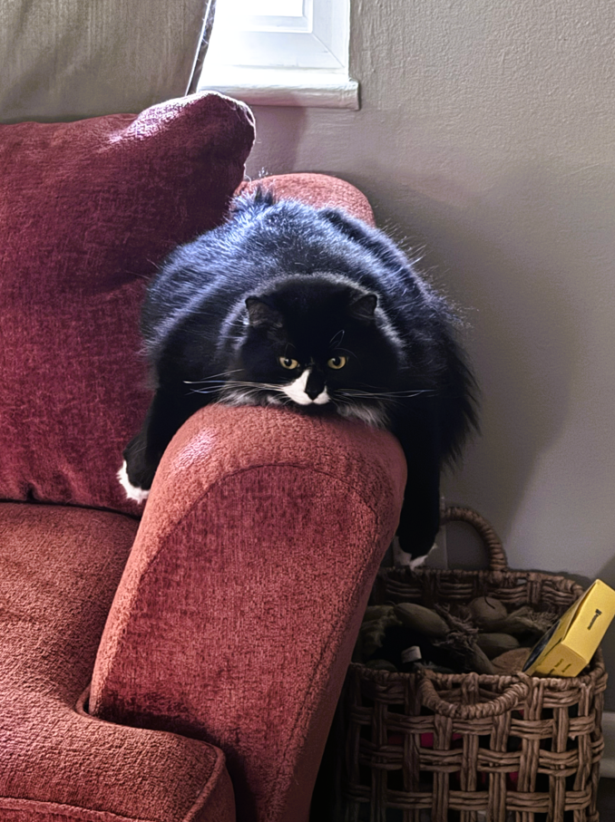

Interests
Outside of school and IT, I like spending time with my pets and enjoying simple, relaxing hobbies.


Why I include this
I wanted my portfolio to feel like me, not just a class assignment. Having a section for personal interests helps show personality while keeping the site professional and organized.